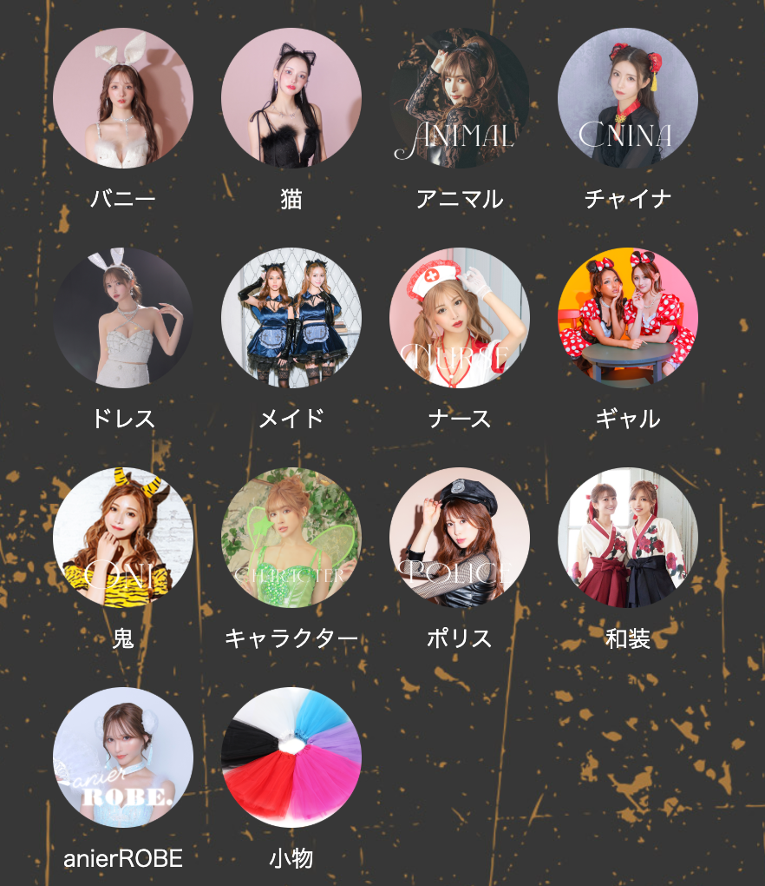
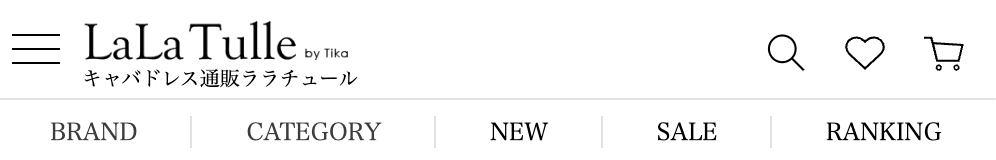
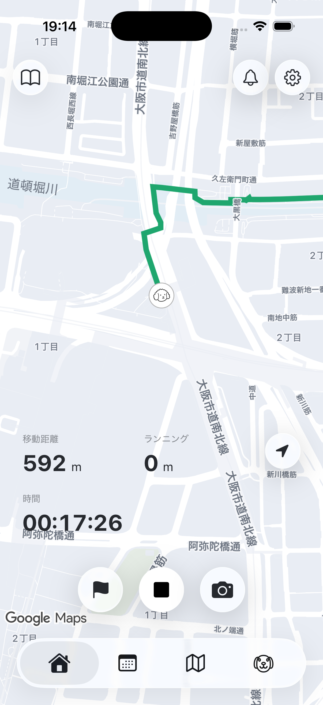
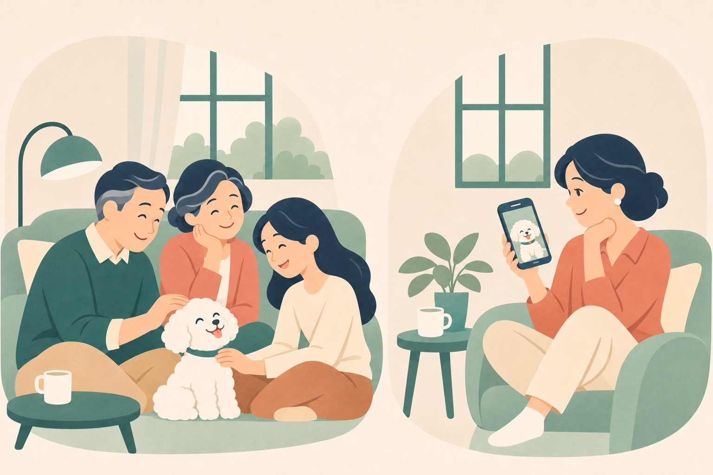
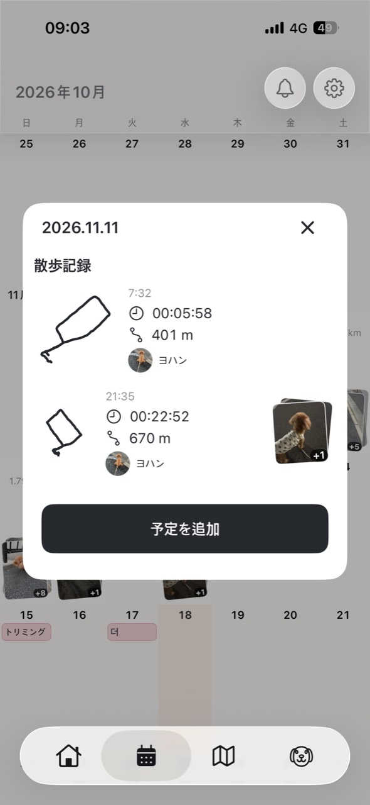
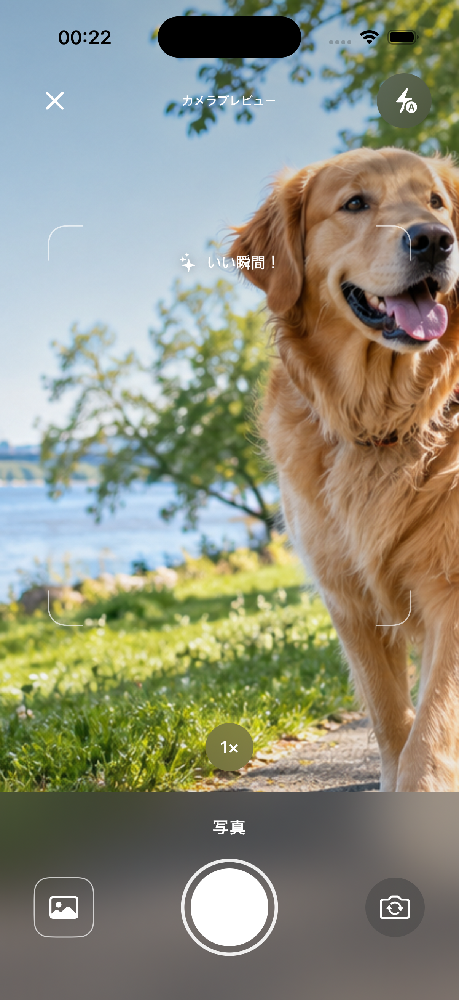
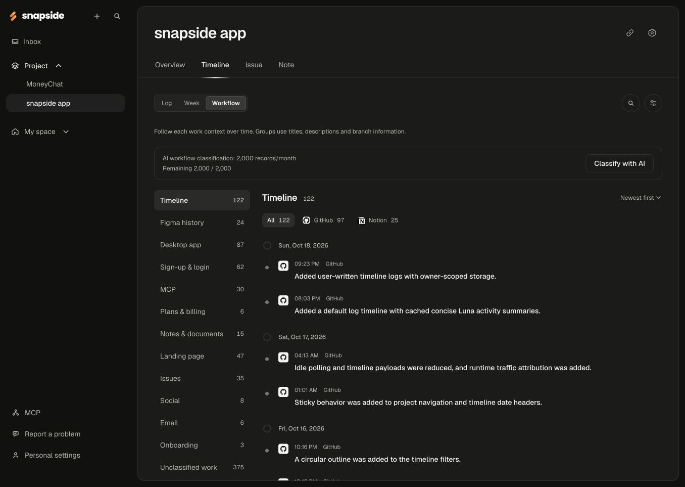

EC SITE / 2025.07–2026.02
LaLaTulle
商品を探す流れを、
特集・ホーム・商品詳細で見直しました。
 Photoshop
Photoshop Figma
Figma Cursor
Cursor Clarity
Clarity Google Analytics
Google Analytics Search Console
Search Console1-1 / 2025.09–11
ハロウィンページ改善
カテゴリ選びからページの末尾まで、商品を探す流れを見直しました。
- カテゴリを横並びに
- 古いカテゴリバナーを更新
- 商品一覧を短くし、タブで切り替え
- ページ末尾に次の選択肢を用意
- カテゴリから特集への内部リンクを追加

1-1 / 改善項目 01・02
カテゴリ選びをひとつのメニューに
縦に並んでいたカテゴリを横スクロールにまとめ、古いバナーも更新しました。


1-1 / 改善項目 03
商品一覧をタブ切り替えに
まず各カテゴリを9点から6点に減らし、シーズン終了後にタブで選べる形にしました。


1-1 / 改善項目 04
ページ末尾に、次の選択肢を
Clarityでは末尾の「次のページ」にタップが集まっていました。
商品を探し続けられるよう、フッターに3つの入口を設けました。


1-2 / 2026.02
ヘッダーナビゲーション改善
検索・お気に入り・カートを上段に残し、新作・ランキングは下段へ。
ブログはホームの最新記事バナーに移しました。


1-3 / 2026.02
ファーストビュー改善
セール対象外の主力ブランドをメインバナーに。セールはその下の小さなバナーに移しました。


1-3 / 簡単検索
検索とカテゴリを上部にまとめる
Clarityでは、上部のリンクと中段左の画像カテゴリがよく押されていました。
検索欄・キーワード・画像カテゴリを簡単検索にまとめました。


iOS APP / 2026.10–
ワングラム
散歩に行けなかった家族も、
散歩のルートと写真をあとから見られます。
Figma Codex
Codex
ワングラム / 背景
一緒に歩けない日のために
夫婦で勤務時間が違い、散歩は交代で担当しています。
離れて暮らす家族にも、その日の様子を伝えたいと考えました。


ワングラム / 散歩の記録
タイムラプスで散歩を振り返る
距離と時間に加え、歩いた道と撮った写真を順にたどれます。



ワングラム / テスト後の見直し
散歩中に撮った写真をすぐ確認
撮影後の反応が分かりにくかったため、
現在地ボタンの下に写真を表示し、タップで拡大できるようにしました。


ワングラム / Live Activities
画面を開かずに、時間と距離を確認
ロック画面とDynamic Islandに散歩の状況を表示し、タップで散歩画面に戻れます。


WEB APP / 2026.08–
Snapside
FigmaやGitHubに残る変更を自動で集め、
作業ごと・日付ごとに振り返れます。
Figma Notion
Notion GitHub
GitHub VercelCodex
VercelCodex Claude Code
Claude CodeSnapside / 制作の背景
記録しなくても、あとから振り返れる
ひとりで開発していると、何を変えたかを書き残すのを忘れがちでした。
そこで、すでに各ツールに残っている履歴を使いました。
